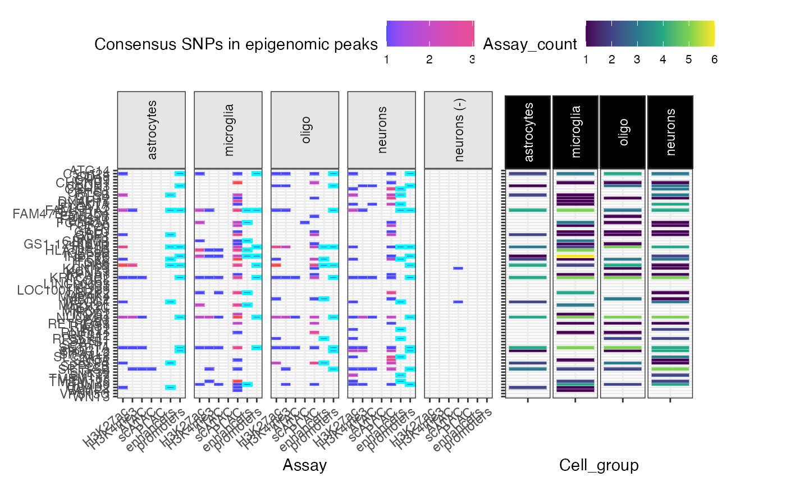
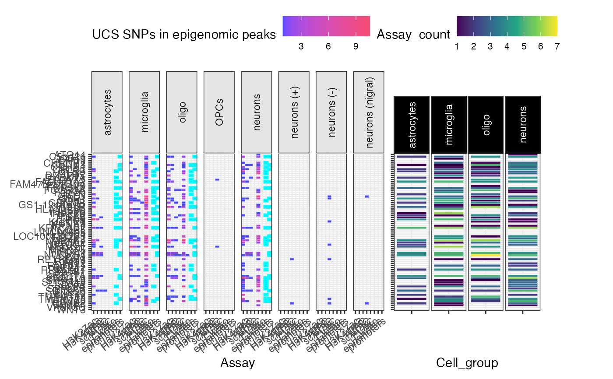

R/peak_overlap_plot.R
peak_overlap_plot.RdPlot overlap between some SNP group and various epigenomic data
peak_overlap_plot( merged_DT, snp_filter = "Consensus_SNP==TRUE", include.NOTT_2019_peaks = TRUE, include.NOTT_2019_enhancers_promoters = TRUE, include.NOTT_2019_PLACseq = TRUE, include.CORCES_2020_scATACpeaks = TRUE, include.CORCES_2020_Cicero_coaccess = TRUE, include.CORCES_2020_bulkATACpeaks = TRUE, include.CORCES_2020_HiChIP_FitHiChIP_coaccess = TRUE, include.CORCES_2020_gene_annotations = TRUE, plot_celltype_specificity = TRUE, plot_celltype_specificity_genes = FALSE, facets_formula = ". ~ Cell_type", show_plot = TRUE, label_yaxis = TRUE, x_strip_angle = 90, x_tick_angle = 40, drop_empty_cols = F, fill_title = paste(snp_filter, "\nin epigenomic peaks"), save_path = F, height = 11, width = 12, subplot_widths = c(1, 0.5), verbose = TRUE )
| include.NOTT_2019_peaks | Plot SNP subset overlap with peaks from cell-type-specific bulk ATAC, H3K27ac, and H3K4me3 assays. |
|---|---|
| include.NOTT_2019_enhancers_promoters | Plot SNP subset overlap with cell enhancers and promoters. |
| include.CORCES_2020_scATACpeaks | Plot SNP subset overlap with cell-type-specific scATAC-seq peaks. |
| include.CORCES_2020_Cicero_coaccess | Plot SNP subset overlap with Cicero coaccessibility peaks (derived from scATACseq). |
Nott et al. (2019) Corces et al. (2020/bioRxiv)
Other summarise:
CS_bin_plot(),
CS_counts_plot(),
get_CS_bins(),
get_CS_counts(),
get_SNPgroup_counts(),
plot_dataset_overlap(),
results_report(),
super_summary_plot()
# Consensus SNPs gg_peaks <- peak_overlap_plot( merged_DT = echodata::Nalls2019_merged, snp_filter = "Consensus_SNP==T", fill_title = "Consensus SNPs in epigenomic peaks" )#>#>#>#>#>#>#>#>#>#>#>#>#>#>#>#>#> Warning: The `.dots` argument of `group_by()` is deprecated as of dplyr 1.0.0.#>#>#>#>#>#>#>#>#>#>#>#>#>#>#>#>#>#>#>#>#>#>#>#>#>#> Error in if (!is.null(convert_ref_genome) && toupper(convert_ref_genome) != : #> missing value where TRUE/FALSE needed# UCS SNPs gg_peaks <- peak_overlap_plot( merged_DT = echodata::Nalls2019_merged, snp_filter = "Support>0", fill_title = "UCS SNPs in epigenomic peaks" )#>#>#>#>#>#>#>#>#>#>#>#>#>#>#>#>#>#>#>#>#>#>#>#>#>#>#>#>#>#>#>#>#>#>#>#>#>#>#>#>#> Error in if (!is.null(convert_ref_genome) && toupper(convert_ref_genome) != : #> missing value where TRUE/FALSE needed